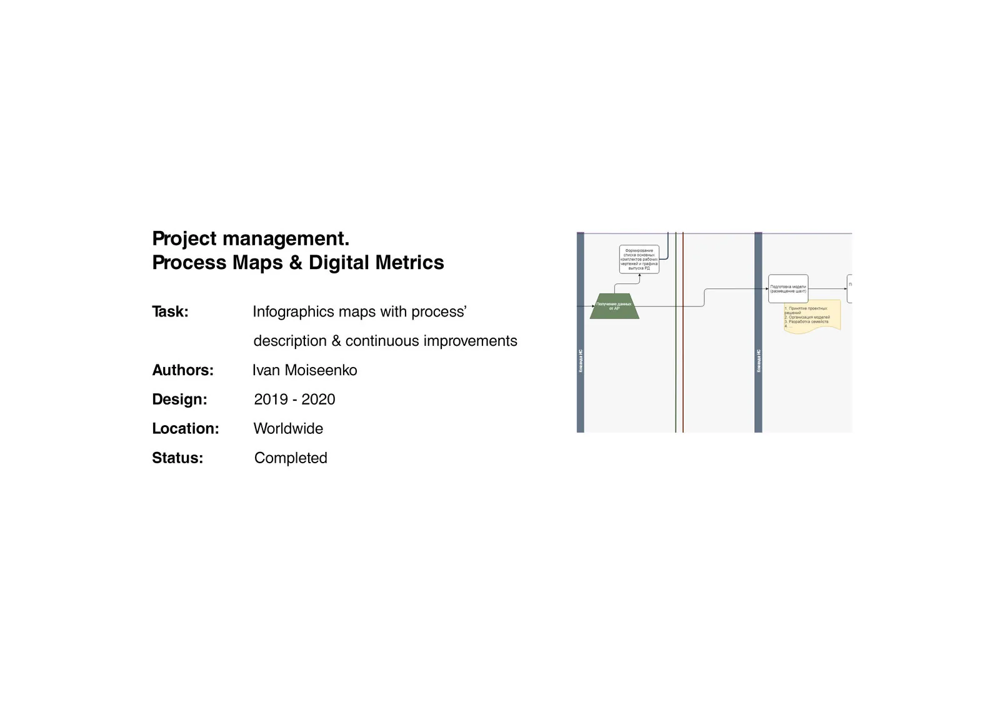
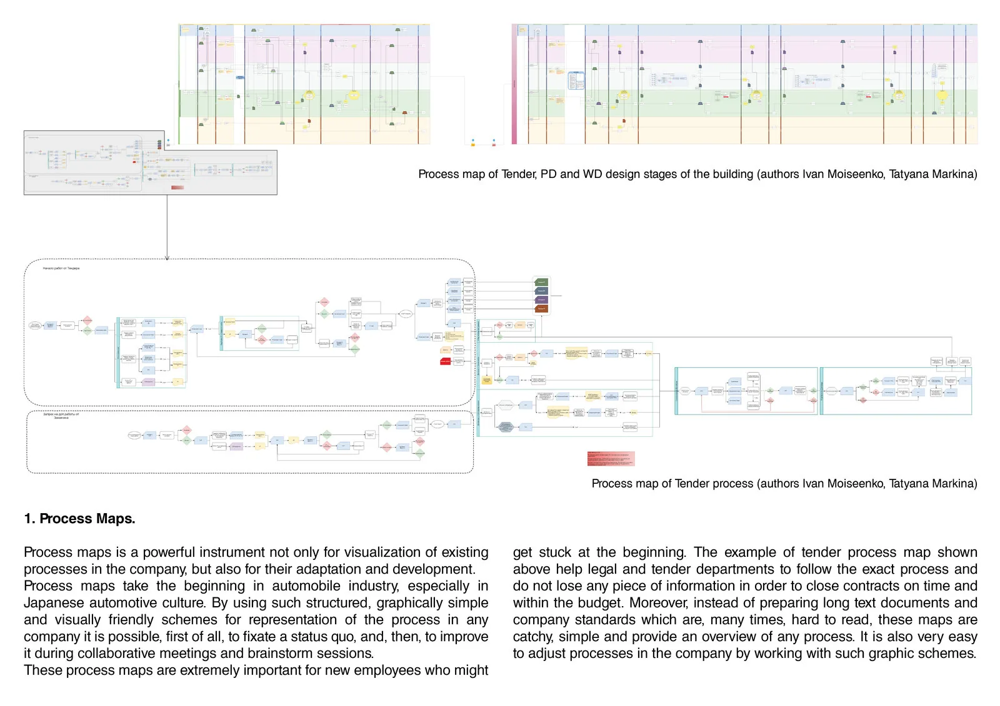
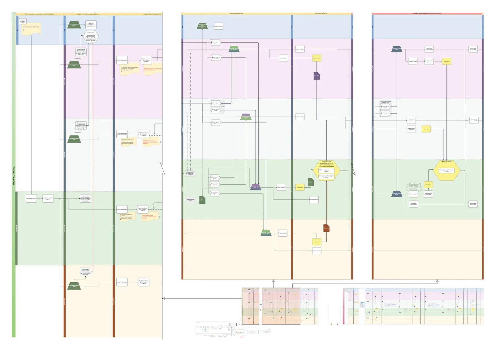
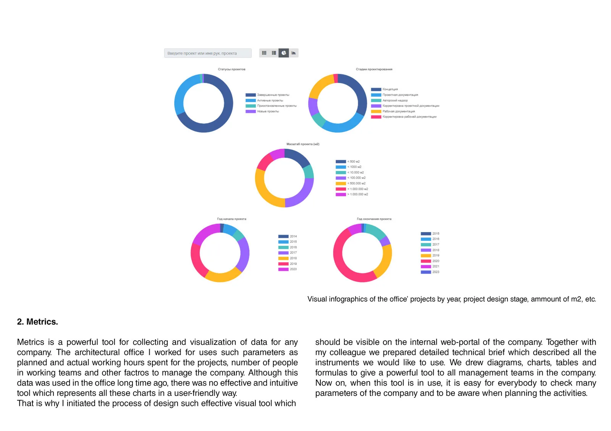
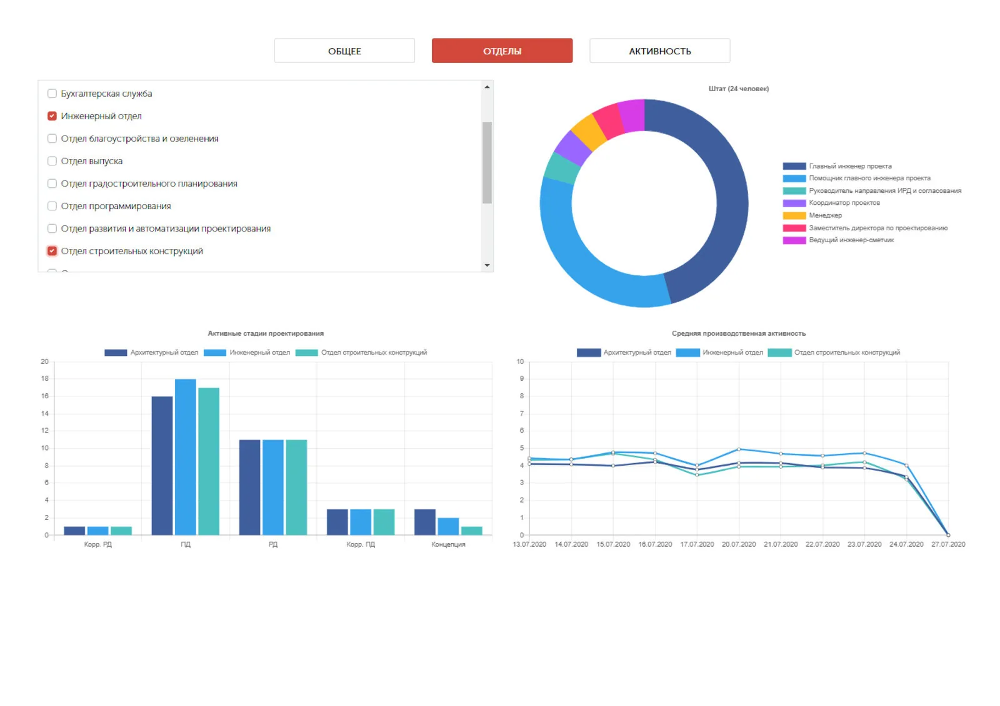
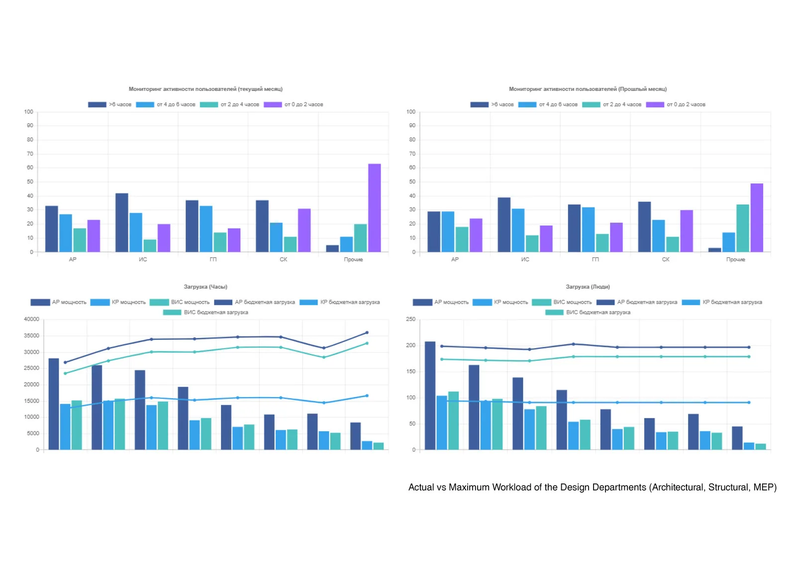

Case studies › DfMA Design & Development › Project management and systematization
Project management and systematization
Infographic maps with process descriptions and continuous improvements: digital metrics, CRM systems and project management tools.






Have a site or a project?
Tell us the basics. We reply by e-mail within one working day.